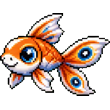

 Water
Water Psychic
PsychicTap a stage to read its story.
Aurylet drifts through the shallows of Coral Bay like a living gem, its orange-and-white body trailing two small fan-shaped tail fins that shimmer with each flick. Large round eyes seem to read the water around it before it moves, as though it already knows where each current will go. Locals say that if Aurylet circles a tide pool three times, a new coral blossom will open there by morning. The guardians once used its shimmering fins as lanterns to find their way through night-dark coves.
Field note: Aurylet circles a tide pool exactly three times before sleeping, never more, never fewer.
Coral Bay. Aurylet and its family are found in the Coral Bay. See everyone who lives there.
Share a Bond Food that matches its types to become friends. Aurylet loves:
A Bond Food is not a trick. It joins your spirit with the Kimuro's spirit, and only when it chooses you.
Print the Kimuro adventure packs: mazes, cards, a board game and Bond Mark medals.
See the printable packs